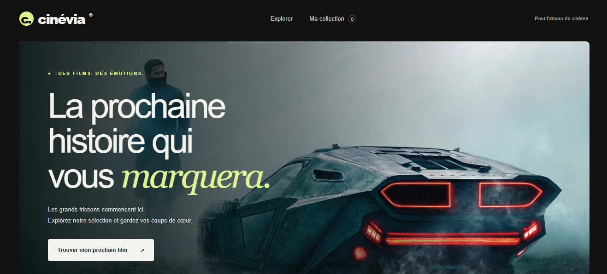

TAHA
MOUADDINE
Développeur web Full Stack — PHP / Laravel
Des applications utiles. Un backend solide.

CoRide
Covoiturage domicile-travail entre employés.
- Laravel
- Blade
- MySQL
Projet en binôme
Autres projets
Du backend aux interfaces web. Ouvrez un projet pour en savoir plus.
Nabd Al-Madina / SmartSignalAPI de signalements citoyens.
Une API de gestion de signalements urbains avec photos, statuts, incidents et départements. Le code intègre l’analyse des signalements par IA et la recherche de doublons. Projet académique en équipe.
- Laravel
- Sanctum
- MySQL
- API REST
DevJobs APIOffres d’emploi et candidatures.
Une API pour gérer les entreprises, les offres, les compétences et les candidatures. Authentification par jetons, accès selon les rôles et contrôle des candidatures déjà envoyées.
- Laravel
- Sanctum
- MySQL
- API REST
CrenoRendez-vous et créneaux.
Une application de prise de rendez-vous avec gestion des créneaux, réservation et annulation. Les règles métier contrôlent les créneaux passés, déjà réservés et les chevauchements. Le dépôt comprend des tests unitaires et fonctionnels.
- Laravel
- MySQL
- PHPUnit
FoodiezCommandes de restaurant.
Un tableau de bord de commandes avec création, recherche, filtres et changements de statut. Les données sont enregistrées via une API locale JSON Server.
- JavaScript
- Tailwind CSS
- JSON Server
GrimoireProjets de recherche et notifications.
Gestion de projets de recherche académique avec membres, rôles, avancement et archivage. Des événements, listeners et jobs permettent les notifications asynchrones et la génération de rapports de clôture.
- Laravel
- MySQL
- Queues
AgriGestParcelles agricoles.
Gestion de parcelles agricoles : création, modification, consultation et suppression, avec recherche par nom ou culture et filtrage par statut.
- Laravel
- Blade
- MySQL
- Docker
FitConnectAdhérents, abonnements et séances.
Gestion de salles de sport, adhérents, abonnements et séances. Architecture en couches avec entités, repositories, services et contrôleurs ; contrôle des abonnements actifs et validation des séances.
- PHP
- PDO
- MySQL
LireMondeBibliothèque personnelle.
Une bibliothèque en ligne avec recherche par titre, filtres par genre, liste « À lire » et interface d’administration pour ajouter, modifier et supprimer les livres.
- HTML
- CSS
- JavaScript
- JSON Server
GitHub FinderProfils et favoris.
Recherche de profils GitHub, affichage des informations et des dépôts, gestion de favoris enregistrés dans le navigateur.
- JavaScript
- GitHub API
- localStorage
SchoolManagerGestion scolaire.
Gestion des élèves, classes, enseignants, matières, inscriptions et affectations, avec un tableau de bord récapitulatif.
- PHP
- PDO
- MySQL
Hotel ManagementBase de données SQL.
Un projet de modélisation relationnelle pour un hôtel : clients, catégories de chambres, chambres, réservations, paiements et séjours. Le dépôt contient le script SQL et la documentation.
- MySQL
- SQL
- Modélisation
NextoPrototype HTML/CSS de file d’attente.
Prototype d’interface de gestion de files d’attente : accueil, prise de ticket, liste d’attente et écrans d’administration. Il s’agit d’un prototype front-end, sans backend temps réel dans ce dépôt.
- HTML
- CSS
TecNoloMini-wiki technologique.
Un site pédagogique de présentation des technologies web, avec page d’accueil, liste d’articles et pages de détail.
- HTML
- CSS
ZayFBSCatalogue et panier JavaScript.
Un site de présentation et de catalogue d’huiles d’olive avec panier côté navigateur et gestion des quantités. Le dépôt ne constitue pas une solution de paiement en ligne.
- HTML
- CSS
- JavaScript
À propos
Développeur web formé à Simplon Maghreb en partenariat avec CCFBS, je conçois des applications web simples, fiables et bien structurées, avec un intérêt particulier pour le backend.
Mon travail couvre la modélisation des données, les règles métier, les API REST et les interfaces web.
Parlons de votre projetCompétences
- PHP
- Laravel
- Eloquent
- MySQL
- API REST
- HTML
- CSS
- JavaScript
- Blade
- Tailwind CSS
- Git
- Docker
- PHPUnit
- Postman